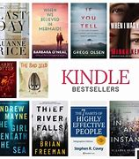

Vind jij lezen leuk?
Boeken komen in alle verschillende soorten en maten, er is vast wel 1 is die je leuk vindt. Hou je van spanning of meer van romantiek. Er is ook komedie, fantasie, thrillers, sciencefiction enz. Al die genres geven heel veel verschillende keuzen.
Lezen zal werelden voor je openmaken die je niet eerder kenden. Er is niks beter dan verdwaalt raken in je eigen fantasie.
Reviews
Soms weet je niet zeker of een je boek wilt lezen, daar helpen reviews mee. Reviews geven je een inzicht in hoe andere mensen kijken naar een boek. Zo kan je zien of je een boek leuk zo vinden.
Klik hier voor meer...

Best sellers
Door de jaren heen worden veel boeken geschreven, goede en slechte. Boeken die ongelooflijk goed verkocht worden heten best sellers. Mischien vind jij wel een boek bij de best sellers die jouw aanspreekt.
Klik hier voor meer...
Best sellers
Door de jaren heen worden veel boeken geschreven, goede en slechte. Boeken die ongelooflijk goed verkocht worden heten best sellers. Mischien vind jij wel een boek bij de best sellers die jouw aanspreekt.
Klik hier voor meer...
Boekenlijst
Wat zijn de beste boeken ooit die je gelezen hebt? In deze boekenlijst vind je de de beste boeken/romans/fictie/non-fictie ooit. Grote kans dat het meest indrukwekkende en mooiste boek dat je ooit gelezen hebt, hier bij zit.
Klik hier voor meer...